CodingSpectator’s User GuideCodingSpectator
Team |
You should be using Eclipse 3.6 Helios. You may check which version you have installed by looking at the logo that appears during startup; it should say Eclipse Helios.
Note: Please note that the plug-in cannot be installed on an older version of Eclipse e.g. Eclipse 3.5 Ganymede. It only works with Eclipse 3.6 Helios. If you are using Helios but are still having problems please contact us.
After installing Eclipse, you need to install our plug-in by following the steps below:
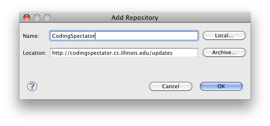
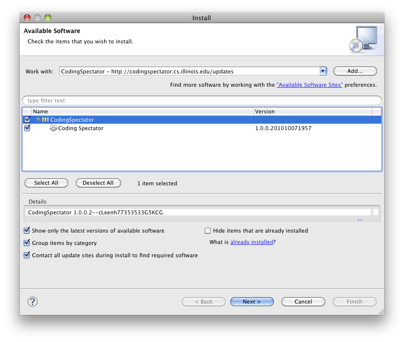
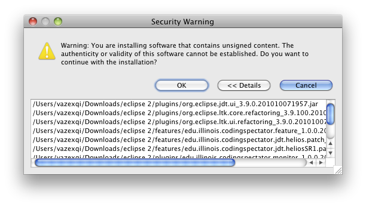
Our plug-in is a non-intrusive extension that monitors your coding activities inside Eclipse. It will run in the background and will not interfere with your coding routines except for the occasional dialog asking you to upload your data. Your data will be uploaded to a secure TSG server that only the researchers have access to.
Note: Our plug-in will monitor for programming behavior in all workspaces that you create using that particular Eclipse instance. As detailed in the consent form (https://illinois.edu/fb/sec/9663171), the plug-in will record certain code development activities that are performed in the workspace and store that information. In addition, the plug-in might collect some code snippets to provide more context to the activities that are being performed.
If you have sensitive data that you do not wish the plug-in to collect, you would need to install two instances of Eclipse: one with our plug-in and one without our plug-in.
Please feel free to talk to us if you have any questions and concerns about your privacy. We can work our a suitable compromise.
Once a day (at most), during the initial startup of Eclipse, you might be presented with the dialog box below asking you to upload your data. Please provide your UIUC netid and AD password when prompted.
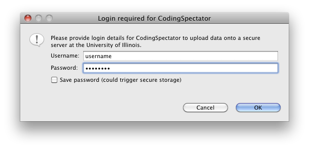
If you provide the wrong username/password, our plug-in will prompt you again:
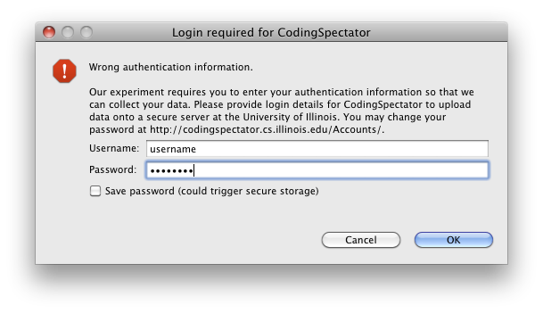
If you wish, you may also click on the Save password (could trigger secure storage) checkbox. This will ask Eclipse to store your username and password using its underlying Secure Storage mechanism. If you decide to save your password, it will proceed to ask you to create a master password. Please follow the instructions on screen as they are OS-dependent.
Additionally, if you decide to save your password, on subsequent uploads of our plug-in, you will no longer see the dialog above but one of the following ones:
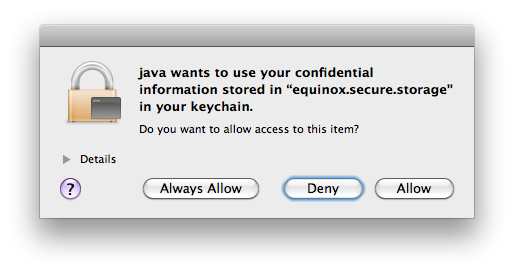 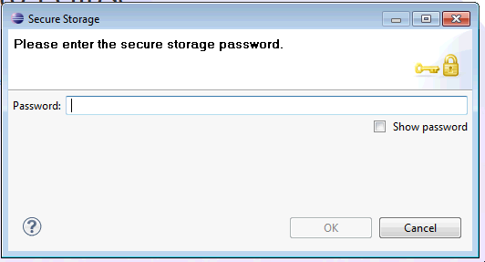 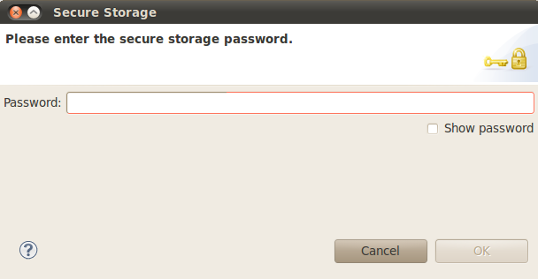
Please enter the master password that you have created (not your AD password) when prompted by the Secure Storage dialog box.
You may also trigger the data upload manually. We provide this facility because, occasionally, it might not be convenient to upload the data during the startup of Eclipse.
To invoke the manual uploading of your data, you can go to Window > Preferences (on Linux and Windows) or Eclipse > Preferences... (on Mac OS X). Click on the CodingSpectator section.
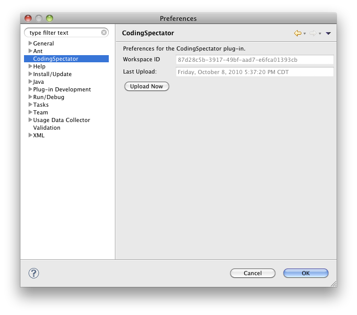
In that preference pane, you will see:
Note: This section Developing Photran plug-ins is important. Please read and follow the instructions carefully. The mechanism for doing this might seem complicated at first but it is a direct result of the Eclipse ecosystem and its conventions. If you have any questions, we are available to help.
As part of the final project for CS427, you will be expected to develop a plug-in for Photran. There is an additional step that you need to perform before running/debugging/testing your Photran instance: you need to modify your launch configuration so that it does not launch our CodingSpectator plug-in. This prevents it from popping-up the dialog window each time you run/debug/test Photran and prevents it from spuriously logging your data.
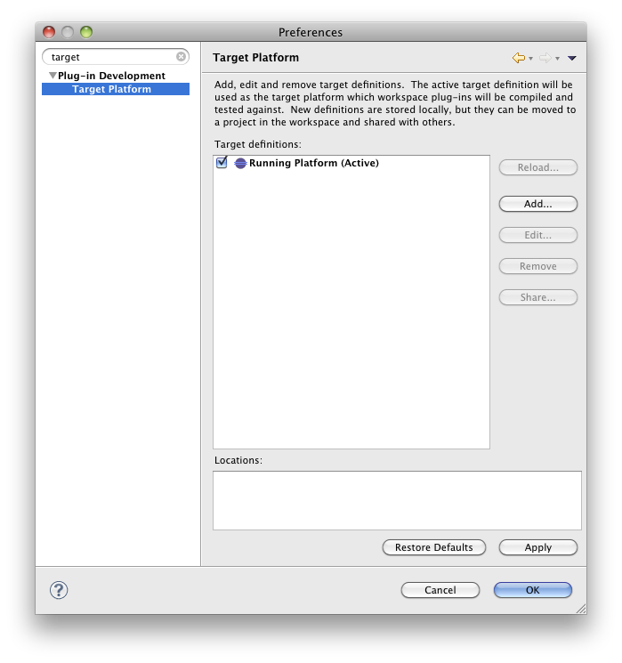
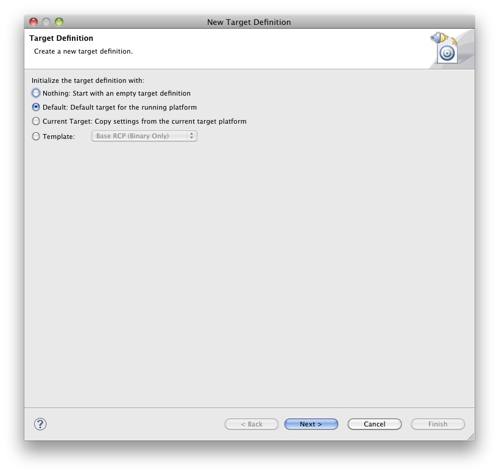
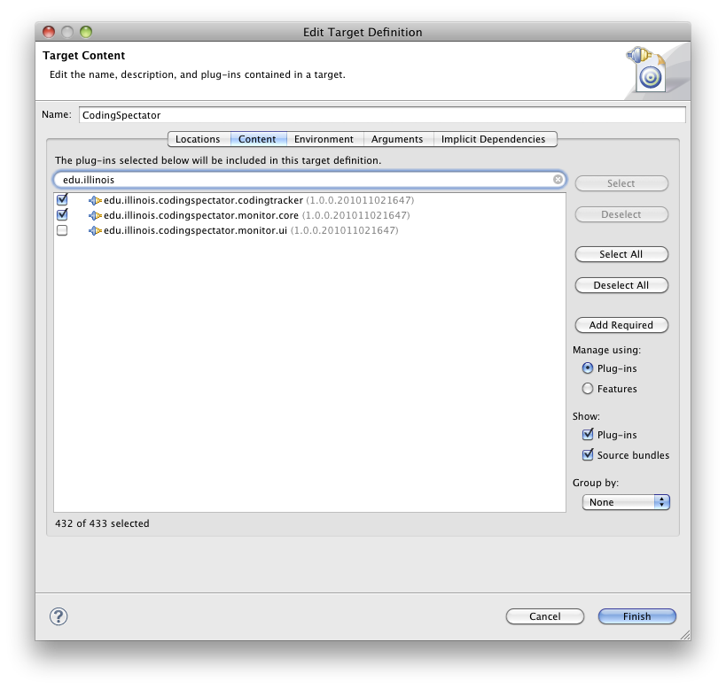
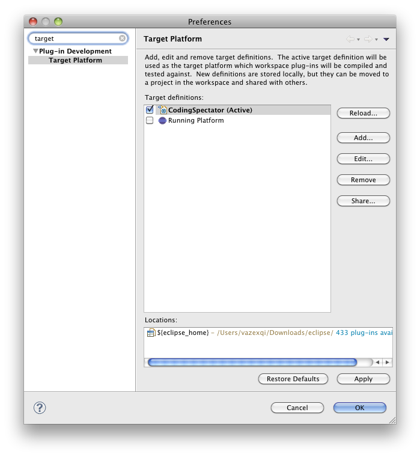
During this research study, we might require you to update our plug-in. Should this become necessary, we will contact you via e-mail to upgrade the plug-in. This is a simple process that you can perform by going to Help > Check for Updates in the Eclipse application.
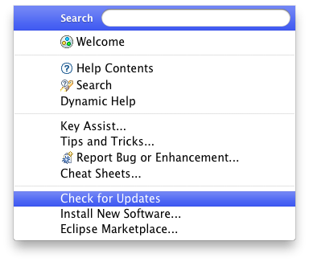
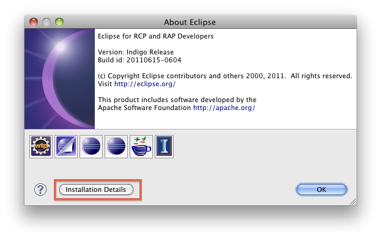
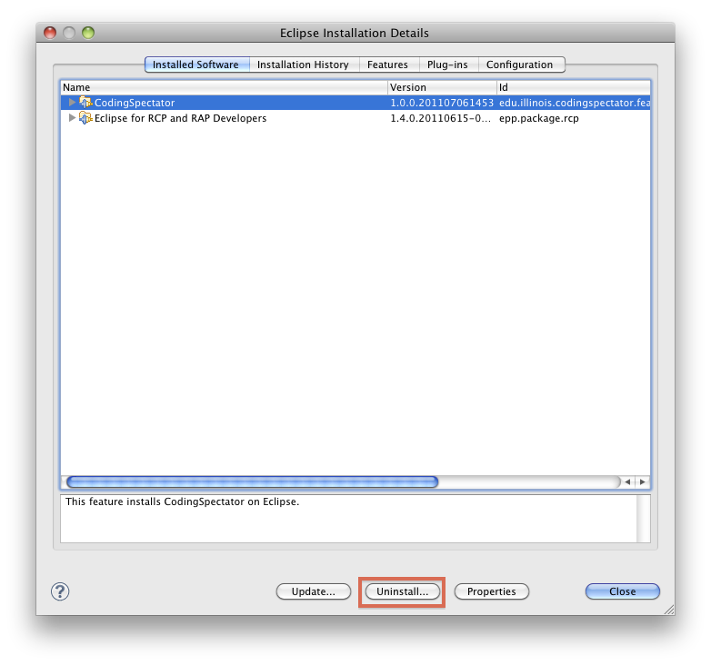
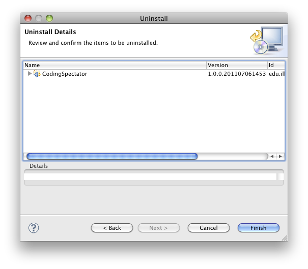
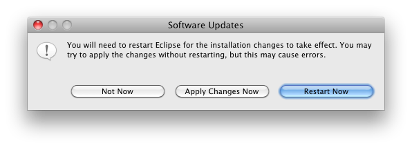